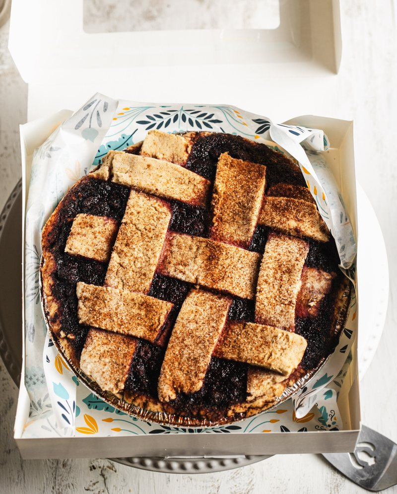

6-Ingredient Blueberry Pie
The blueberry filling we use at the bakery, scaled for one 9-inch pie. Six ingredients, vegan and gluten-free, and it slices clean instead of bleeding all over the plate.
Skip to recipe ↓Blueberries are the juiciest fruit you can put in a pie. Cut most blueberry pies warm and you get a purple puddle and a soggy bottom crust.
This is the filling we run at the bakery. We tested it batch after batch until it set every time, and it's vegan and gluten-free like everything else we make.
What holds this filling together
Corn starch does the heavy lifting
Blueberries burst in the oven and release a lot of liquid. Corn starch thickens that juice as it boils, which is why you bake until you see thick bubbles in the center, not just at the edges.
Psyllium is the backup
A little psyllium husk grabs whatever juice the corn starch misses, so the slice holds its shape on the plate. Whisk it into the sugar first or it clumps. More on how it works in my psyllium guide.
Two sweeteners, two jobs
Cane sugar gives clean sweetness. Maple syrup adds depth that plain sugar can't. Lemon juice keeps the berries tasting bright instead of jammy, and an optional pinch of salt makes the whole thing taste more like blueberry.
Par-bake the crust
Wet filling on raw dough means a soggy bottom. The crust goes in empty for 10 minutes at 375°F first, no weights. Here's my crust and why I par-bake it.

6-Ingredient Blueberry Pie

Equipment
- 9-inch pie dish
- Large bowl and whisk
- Foil (for the edges)
Crust
One 9-inch gluten-free crust. I use our bakery pie crust.
Filling
| Ingredient | Weight | % |
|---|---|---|
| Blueberries, fresh or frozen | 960 g (about 6½ cups) | 67.42% |
| Maple syrup | 200 g (⅝ cup) | 14.04% |
| Cane sugar | 150 g (¾ cup) | 10.53% |
| Corn starch | 55 g (7 tbsp) | 3.86% |
| Lemon juice | 37 g (2½ tbsp) | 2.60% |
| Psyllium husk | 10 g (1¾ tbsp) | 0.70% |
| Vanilla extract (optional) | 9 g (2 tsp) | 0.63% |
| Salt (optional) | 3 g (½ tsp) | 0.21% |
| Total | 1,424 g | 100% |
Frozen blueberries work. Don't thaw them, just add 5 to 10 minutes to the bake.
Instructions
- Par-bake the crust. Heat the oven to 375°F. Bake the empty crust for 10 minutes, no weights.
- Mix the dry. Whisk the cane sugar, corn starch, psyllium and salt (if using) together so the psyllium can't clump.
- Add the wet. Stir in the maple syrup, lemon juice and vanilla (if using), then fold in the blueberries until every berry is coated. Let it sit 10 minutes.
- Fill. Pour the filling into the par-baked crust and spread it level.
- Bake. Bake at 375°F for 35 minutes, until the filling bubbles thick in the center. Tent the edges with foil if they brown early.
- Cool. Let it cool at least 3 hours before slicing. The filling finishes setting as it cools.
Keeps 2 days on the counter, covered, or 5 days in the fridge.
Common failures and fixes
- The filling ran when I cut it. Either it was sliced warm or it came out before the center bubbled. Give it the full bake and the full cool.
- Soggy bottom. The crust skipped the 10-minute par bake. Don't skip it.
- Little gummy bits in the filling. The psyllium clumped. Whisk it into the sugar before anything wet touches it.
- Edges too dark. Foil around the rim for the last 15 to 20 minutes.
Want it with apples? Here's my apple pie.